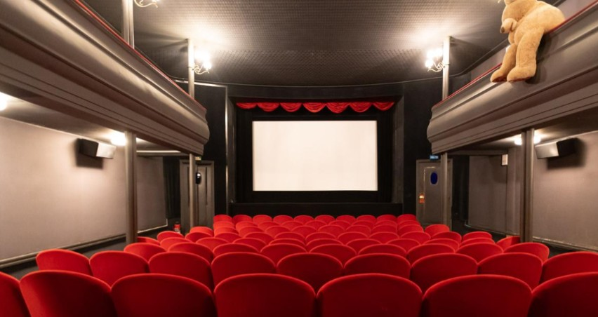
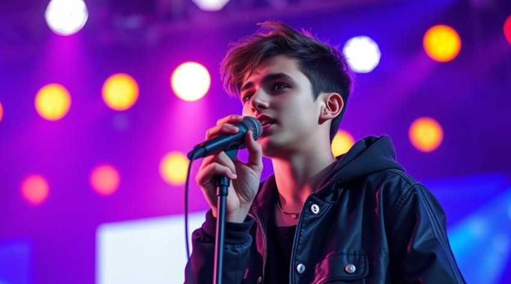
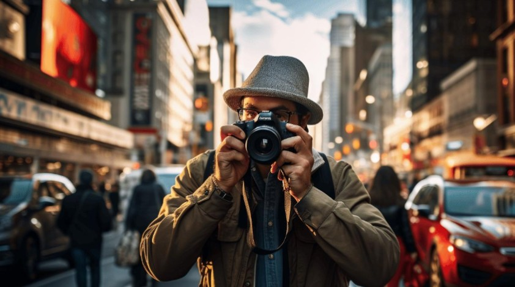

La culture est partout autour de nous. Elle nous permet de découvrir
de nouvelles idées, de partager des émotions et de mieux comprendre le
monde. À travers le cinéma, la musique, les livres et les expositions,
nous explorons la créativité et la
diversité des expressions artistiques.
Notre webzine vous propose des actualités, des critiques et des
découvertes accessibles à tous. Que vous soyez passionné de
cinéma, amateur de BD ou curieux
de nouvelles tendances, vous trouverez ici de l'inspiration.
Les dernières actualités
Cinéma — Le retour du cinéma indépendant

Le cinéma indépendant propose des histoires originales.
Le cinéma indépendant attire de plus en plus de spectateurs. Les
réalisateurs proposent des histoires originales et abordent des
sujets de société avec un regard différent. Ces films offrent une
alternative intéressante aux grandes productions hollywoodiennes.
Musique — La nouvelle scène musicale française

Les nouveaux artistes français explorent différents styles
musicaux.
La scène musicale française connaît un véritable renouvellement. De
jeunes artistes mélangent la pop, le rap, l'électro et les musiques
traditionnelles. Grâce aux plateformes numériques, ils peuvent
partager leurs créations avec un public international.
Littérature — Pourquoi les jeunes redécouvrent les livres
La lecture reste une source de découverte et d'inspiration.
Malgré le développement des technologies numériques, la lecture
reste une activité appréciée. Les clubs de lecture et les
communautés en ligne encouragent les jeunes à découvrir de nouveaux
auteurs et à partager leurs impressions.
Photographie — L'art de raconter une histoire en images

La photographie permet de capturer des moments de la vie
quotidienne.
La photographie est un moyen puissant de raconter des histoires sans
utiliser de mots. Aujourd'hui, les appareils numériques et les
smartphones permettent à chacun de capturer des moments de la vie
quotidienne et de développer son propre style artistique.
La culture au quotidien : pourquoi est-elle importante ?
Afficher la transcription
Animateur :
Bonjour et bienvenue dans notre podcast culturel !
Invitée :
Bonjour ! Merci pour votre invitation.
Animateur :
Aujourd'hui, nous allons parler de cinéma et de musique.
Invitée :
Ce sont deux formes d'art qui nous permettent de découvrir de
nouvelles cultures.
Animateur :
Il y a aussi la littérature, dont nous parlerons dans le
prochain podcast.
Invitée :
Oui, c'est également une partie très importante de notre
culture.